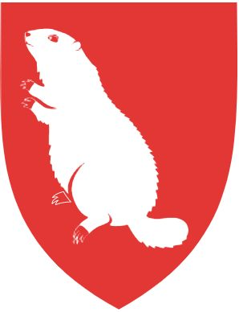

Hover over number to see photo's location
01
Passo Fedaia
Dolomites, Italy
46.468106, 11.839798
Visitors to the Alps will experience a majestic and enchanting mountain landscape sure to touch their soul. Countless outdoor activities and a warm welcome make holidays in this stunning region an unforgettable experience.
Travellers from all across the world come to the Alps, to leave behind their worries, escape the stress of everyday life and be at one with nature. With 82 peaks over 4,000 metres, hundreds of peaks over 3,000 metres, hundreds of glaciers along the main ridge, lush green meadows and charming huts, the Alps boast a truly unique landscape.
“Here I have finally found a place of quiet, a place of peace, the like of which I could have only wished for,”
wrote Johann Wolfgang von Goethe, German writer and statesman, about the Tyrolean Alps in 1829. We can relate.

🇩🇪
BERCHTESGADEN ALPS
🇮🇹
DOLOMITES
🇦🇹
DACHSTEIN MOUNTAINS
🇨🇭
VALAIS ALPS
mountain artworks by marmota maps
Berchtesgaden Alps
Rugged cliffs, deep dark forests, wild torrents and glaciers, as well as peaceful green pastures, and idyllic valleys. Berchtesgaden Alps with its varied landscapes and breathtaking beauty is to be found in the Bavarian easternmost corner.
02
Archenkanzel
Berchtesgaden National Park, Germany
47.562436, 12.965800
National Park
The only National Park in the German Alps with its varied landscapes and breathtaking beauty is to be found in the Berchtesgadener Land. Here visitors can experience nature, learn about environmental protection while exploring this unspoiled reserve on well-marked hiking trails. Ever since its foundation in 1978, Germany's only alpine National Park has been a place where plants and wildlife remain untouched. In this way we can preserve a piece of our past for future generations.
03
Mount Watzmann
Fields above Berchtesgaden, Germany
47.639995, 12.980981
Watzmann
The Watzmann mountain (2,713m) is the superstar of the Berchtesgaden Alps as it towers above the valleys below. Its eastern face is a sheer climb of close to 2,000 meters and can only be scaled by experts. However, good hikers can reach the summit via another trail that leads past a large overnight hut called Watzmannhaus. Even for those who do not scale Germany's second-highest peak, a photo of the Watzmann is a must for every visitor to Berchtesgaden.
04
Eiskapelle
Berchtesgaden National Park, Germany
47.542952, 12.936812
Eiskapelle
At the foot of the eastern wall of Watzmann is the awe-inspiring Ice Chapel. The Eiskapelle may well be the lowest lying permanent snowfield in the Alps - its lower end is only 930 metres high in the upper Eisbach valley.
VISITORS BEWARE
The cave is in constant danger of ice disintegration or collapsing.
Every year careless visitors are hurt or even killed by falling ice.
Königssee
Lake Königssee with its emerald green color and nestled at the foot of the imposing eastern wall of Mount Watzmann in the heart of the Berchtesgaden National Park is one of nature's true masterpieces. The 8 km-long lake boasts a water clear as glass. Königssee is the cleanest lake in Germany. For this reason, only electric-powered passenger ships, rowing, and pedal boats have been permitted on the lake since 1909.
Dolomites
Whether connoisseur, active or adventurous, everyone is thrilled by the Italian Dolomites. Little wonder, with the variety offered in the Dolomites holiday region: the majestic Dolomite mountain peaks, and excellent cuisine, a colourful mix of down-to-earth fare and Italian specialties, and of course the warm welcome that meets you wherever you go.
05
Lago di Braies
South Tyrol, Italy
46.693342, 12.084770
Lago di Instagram Braies
Lago di Braies is one of the most beautiful lakes in Italy. Located at an altitude of about 1,500 m above sea level in the picturesque Alta Pusteria valley, the mountain lake captivates with its turquoise-green colour and the imposing Seekofel massif (2,810 m) that surrounds it. The lake, with an average depth of 17 m, measures 36 m at its lowest point. Even though Lago di Braies is listed amongst the bathing lakes of South Tyrol, only a few hardy people dare to jump into the cool waters.
06
Marmolada
Passo Sella, Italy
46.508288, 11.760809
Marmolada
The Marmolada glacier is certainly one of the most majestic mountains to admire. With its 3,342m of height and its eternal snow, it is also called the "Queen of the Dolomites". Marmolada offers on the Punta Rocca peak a panoramic terrace with a 360° view of the mountain world of the Dolomites, an impressive deep view of the surrounding mountain valleys and not only, because on a sunny day you can see Venice, the main Alpine ridge with the Zugspitze and the Grossglockner, to name just a few well-known mountain peaks.
07
Alpe di Siusi
South Tyrol, Italy
46.558397, 11.664921
Alpe di Siusi
The holiday region of Alpe di Siusi in Italy is famous, not only because it has the largest alpine pasture in Europe, but also for its flora and fauna. Since 2009, the 57 km² alpine pasture, which stretches from 1,680 m to 2,350 m above sea level, east of Bolzano, has been declared a UNESCO World Heritage Site.
Alpine Kings
This official list tabulates the 10 highest mountain summits (with 300m prominence) of the Alps, as defined by the International Climbing and Mountaineering Federation (UIAA).
Swipe right to see all data
| Rank | Mountain | Height | Range | Region | Country |
|---|---|---|---|---|---|
| 1 | Mont Blanc | 4808m | Mont Blanc massif | Haute-Savoie/Aosta Valley | 🇫🇷/🇮🇹 |
| 2 | Dufourspitze | 4634m | Monte Rosa Alps | Valais/Piedmont | 🇨🇭/🇮🇹 |
| 3 | Dom | 4545m | Mischabel | Valais | 🇨🇭 |
| 4 | Lyskamm | 4533m | Monte Rosa Alps | Valais/Aosta Valley | 🇨🇭/🇮🇹 |
| 5 | Weisshorn | 4506m | Weisshorn-Matterhorn | Valais | 🇨🇭 |
| 6 | Matterhorn | 4478m | Weisshorn-Matterhorn | Valais/Aosta Valley | 🇨🇭/🇮🇹 |
| 7 | Dent Blanche | 4357m | Weisshorn-Matterhorn | Valais | 🇨🇭 |
| 8 | Grand Combin | 4314m | Grand Combin Alps | Valais | 🇨🇭 |
| 9 | Finsteraarhorn | 4274m | Bernese Alps | Bern/Valais | 🇨🇭 |
| 10 | Zinalrothorn | 4221m | Weisshorn-Matterhorn | Valais | 🇨🇭 |
Find a Mountain
Search for mountains to climb based your preferences.